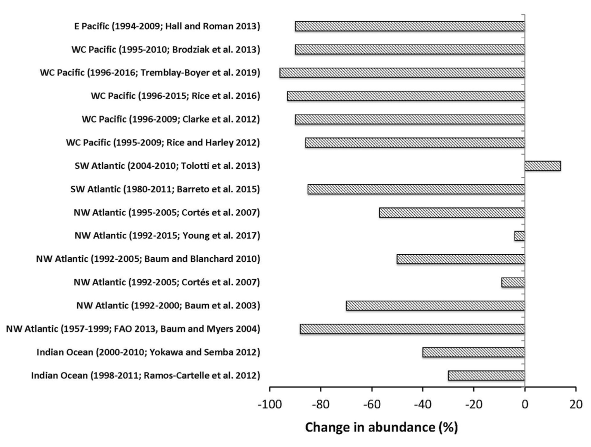
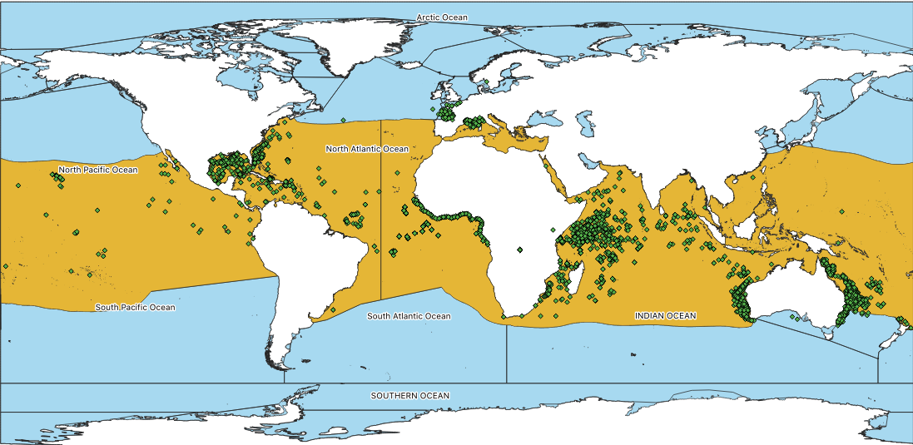
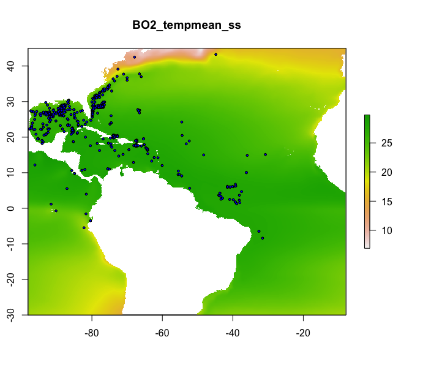
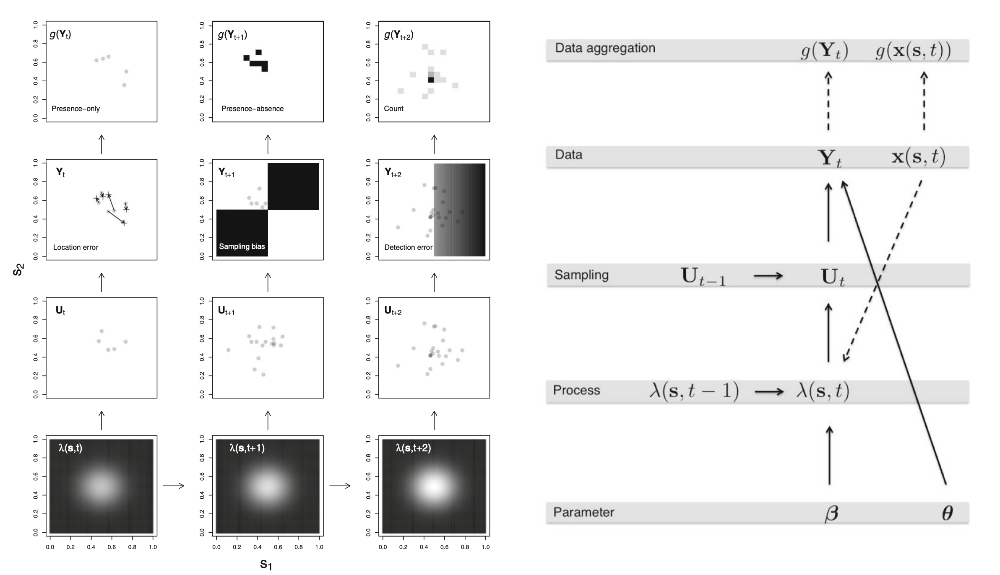
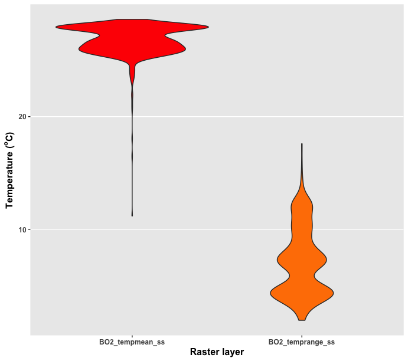
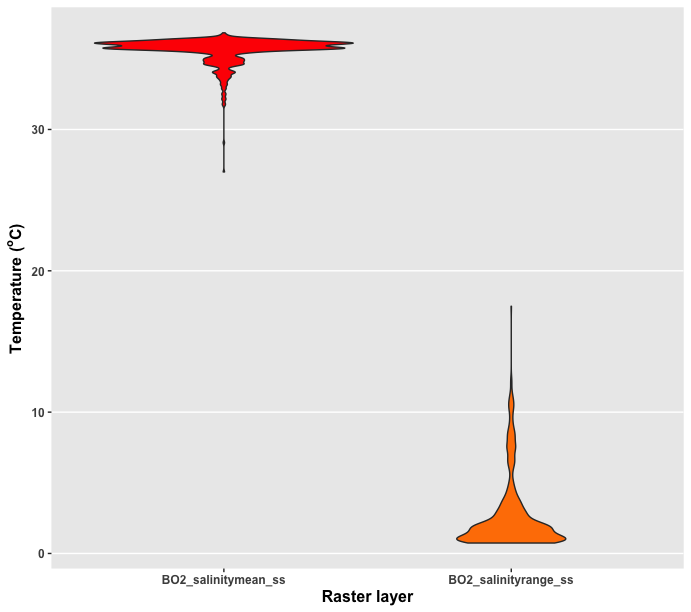
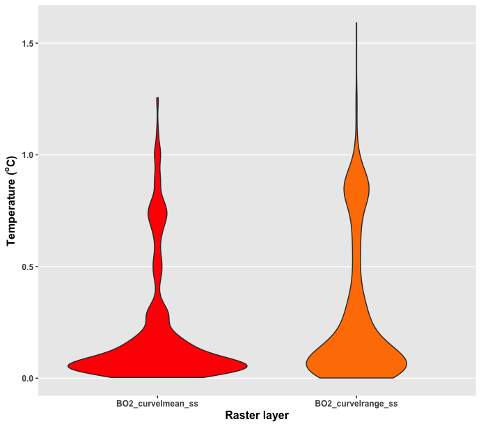
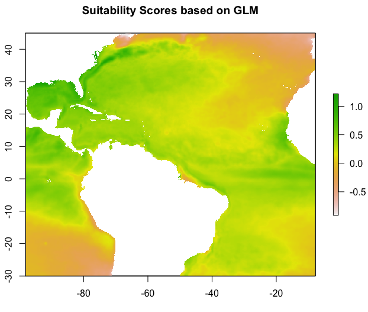
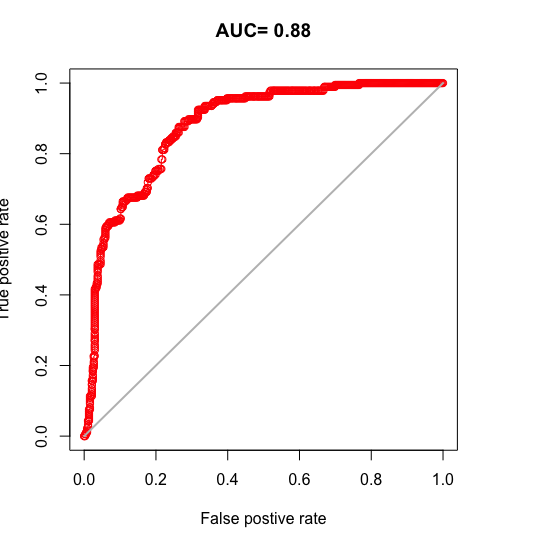
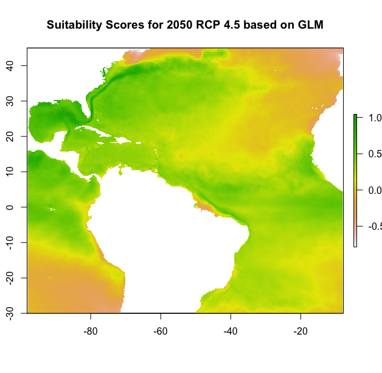

Once an abundant species, the oceanic whitetip shark has suffered substatial population decline. Now considered critically endangered by the IUCN.
They live in the top layer of the open ocean and are distributed globally between 30$^{\circ}$ North and 35$^{\circ}$ South.
They can travel great distances, but seem philopatric.
They are incidentally caught/killed by fisheries faster than they can replenish their population.
Climate change will likely exacerbate their decline.

Young et al 2020
Ocean Biodiversity Information System

Hefley et al 2016Still working out the kinks:
mod.hSDM.binomial <- hSDM.binomial(presences = sdmdata$pb,
trials = rep(1, dim(sdmdata)[1]),
suitability =~present.predictors.scaled,
data = data.obs,
suitability.pred = data.pred,
burnin=1000, mcmc=1000, thin=1,
beta.start=0,
mubeta=0, Vbeta=1.0E6,
seed=1234, verbose=1, save.p=1)
  


